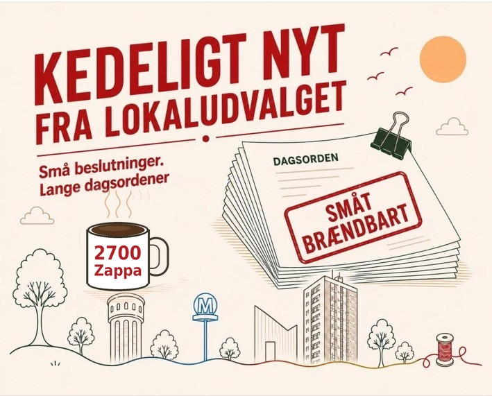

Kedeligt nyt fra Lokaludvalget
Årets frivilligpris gik til Mohamed Hamed
Ved Frivillig Fredag på EnergiCenter Voldparken blev Mohamed Hamed fra Street Society kåret som vinder af Frivilligprisen 2026.
Se opslagetJurypris til Lis Søkvist og Allan Lund
Som noget nyt blev der i år uddelt en særlig jurypris til personer, som har engageret sig i kulturel og social brobygning på tværs af kulturer og generationer i Brønshøj-Husum-Tingbjerg. Juryprisen gik til Lis Søkvist og Allan Lund for deres mangeårige frivillige indsats.
Se opslagetHOFOR på besøg
Lokaludvalget havde besøg af HOFOR, som fortalte om fremtidens vandforsyning. Der skal både arbejdes med at få københavnerne til at bruge mindre vand, forny ledningsnettet og finde mere vand. På programmet var også de store anlægsprojekter Ruten i Tingbjerg, Bystævnet og Spangen.
Se opslagetFordeling af bydelspuljemidler
Lokaludvalget behandlede 15 ansøgninger til Bydelspuljen, og en række lokale projekter har nu fået støtte. Blandt projekterne er nytårskoncert, aktiviteter i Tingbjerg, Repair Café, Drag Pop-Up, LYDKORT og en naturvejledertur på Vestvolden.
Læs mere138 træer i Tingbjerg skal fældes
HOFORs nye kloaksystem i Tingbjerg betyder, at 138 træer skal fældes. 28 af dem er bevaringsværdige. Kommunens forvaltning indstiller, at der gives dispensation til fældningen. Planen er, at alle 138 træer erstattes på de samme vejstrækninger, når projektet er færdigt.
Se dagsordenenNæste frist for ansøgning til bydelspuljen
Frist: 5. oktober
Der er både ekstra ansøgningsfrist til Bydelspuljens 2026-midler og første mulighed for at søge støtte til projekter i 2027 d. 5. oktober. Så hvis nogen går rundt med et lokalt projekt i maven, er det altså snart nu.
Læs mereBONUS: Mit Brønshøj og Vanløse
Brønshøj-Vanløse fik i forrige uge en ny Instagram-konto med tips og tricks til bydelens tilbud og arrangementer. Kontoen vil ganske åbenlyst noget af det samme som Fælleskalender, men har bare mere flair for det. Så ind og følg Mit Brønshøj og Vanløse på Instagram.
Se profilenDet var så sidste krumme af den citronmåne. Vi sætter vand over til en ny i næste uge.